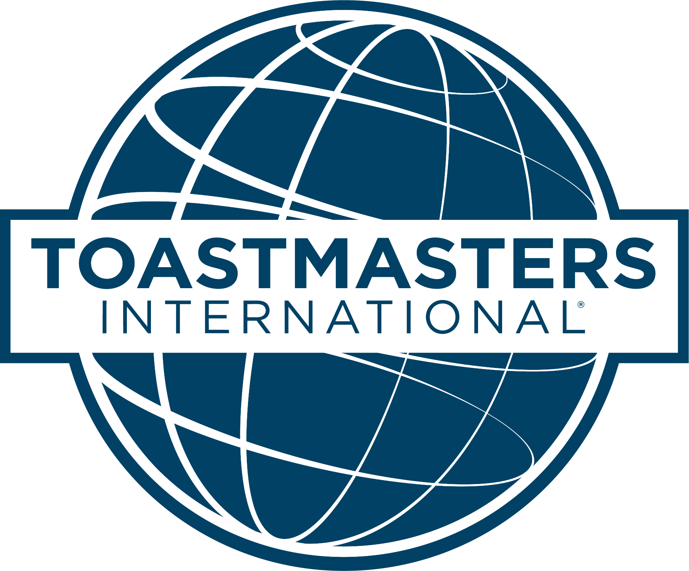
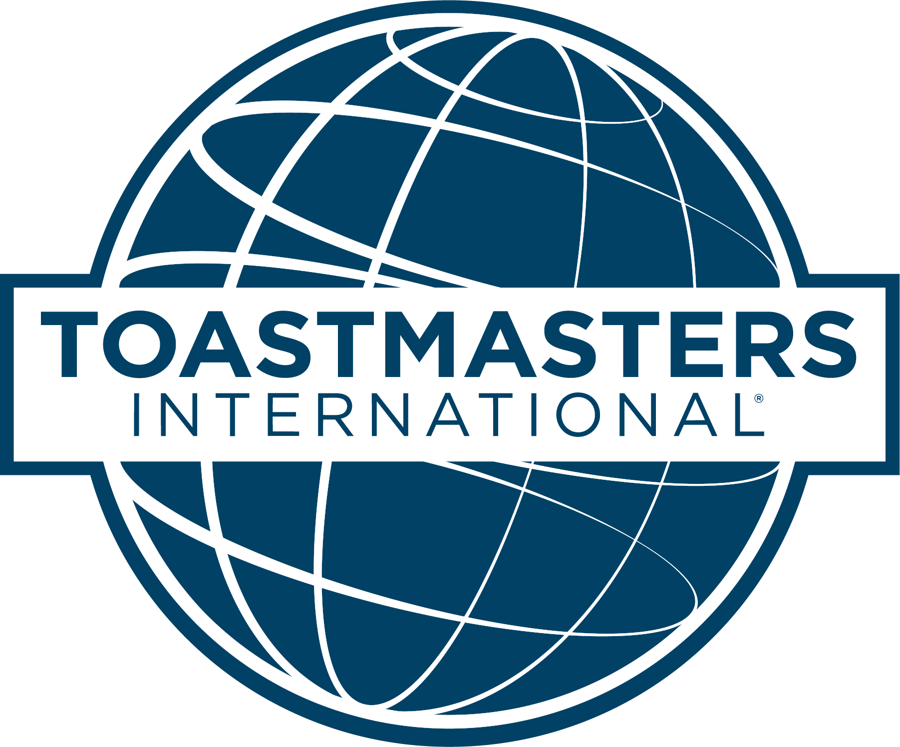

I am an undergraduate student studying Computer Science and Engineering at National Institute of Technology, Tiruchirappalli. My research interests include Operating Systems, Parallel & Distributed Systems and Cloud Computing. I am interested in system design and its optimizations. I am currently working with Defence Research and Development Organisation (DRDO), India for my Final Year Project.
eChronos is a secure real time operating system (RTOS) which is adopted in safety critical systems like aircraft control system
and medical implant devices. Porting eChronos to the open source RISC-V architecture increases the secure system development as a whole.
Formulated the design and architecture aspects involved in porting eChronos to RISC-V. Analysed the safe removal of architectural dependencies and subsequent changes in eChronos and successfully ported eChronos on RISC-V and verified it on
spike.
Conducted a study about parallelizing of Alpha Beta pruning for different optimizations in root splitting and the GPUs specific
architectures like mesh(CUDA) etc. or shared memory model(OpenMP).
Results: Beam search optimization in CUDA(using 4 thread model) is the best implementation possible as the speedup for
mesh architecture(CUDA) is almost 2x faster than OpenMP.
Bachelor of Technology (Honours) in Computer Science and Engineering
National Institute of Technology, Tiruchirappalli, India


 
